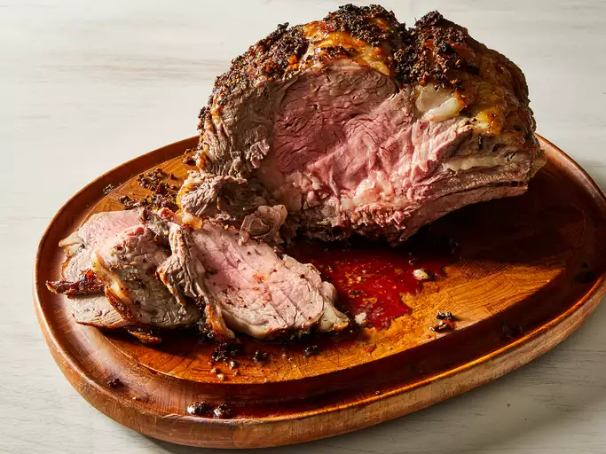

Garlic Prime Rib

About
A tasty prime rib marinade made with olive oil, garlic, and thyme. I was trusted with this recipe but I can't
keep it to myself!
Ingredients
- 1 (10 pound) prime rib roast
- 10 cloves garlic, minced
- 2 tablespoons olive oil
- 2 teaspoons salt
- 2 teaspoons ground black pepper
- 2 teaspoons dried thyme
Steps
- Gather all ingredients for marinade.
- Mix garlic, olive oil, salt, pepper, and thyme together in a small bowl.
-
Place roast in a roasting pan with the fatty side up. Spread mixture over the top of roast; let roast sit
out until it is at room temperature, no longer than 1 hour.
-
Preheat the oven to 500 degrees F (260 degrees C).
-
Bake roast in the preheated oven for 30 minutes; reduce the temperature to 325 degrees F (165 degrees C),
and continue roasting for an additional 60 to 75 minutes. The internal temperature of the roast should be at
135 degrees F (57 degrees C) for medium rare.
-
Allow roast to rest for 10 or 15 minutes before carving so the meat can retain its juices.